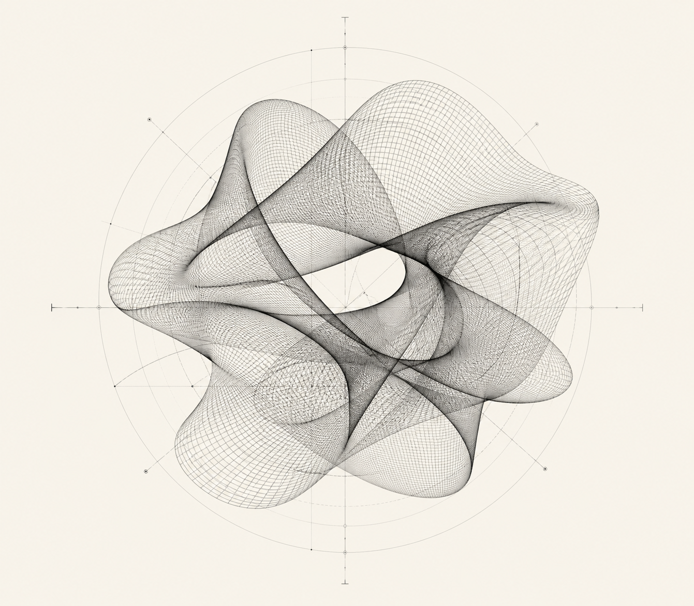

01
AI GESTURE INTERACTION / PUBLIC DISPLAY
Gesture Atlas
A large-format interactive installation that turns hand movement into a shared visual language.
READ CASE STUDYTECHNICAL DESIGNER
NEW MEDIA / SPATIAL SYSTEMS
AVAILABLE FOR SELECTED COLLABORATIONS
I DESIGN INTELLIGENT SPACES
Exploring AI gesture interaction,
XR systems and spatial media.
I make experiential systems where code, motion and perception become one responsive material.
VIEW SELECTED WORK.01
/06

MODE / LIVE
FIELD / RESPONSIVE
INPUT / BODY + SPACE
I BUILD SYSTEMS THAT SEE, LISTEN
AND RESPOND — BLENDING AI,
SENSORS AND SPATIAL STORYTELLING.
X 12.140
Y 08.732
Z 01.309
NOT A SPECTATOR.
A SYSTEM BUILDER.
AI GESTURE INTERACTION / PUBLIC DISPLAY
A large-format interactive installation that turns hand movement into a shared visual language.
READ CASE STUDYXR SPATIAL NARRATIVE / MIXED REALITY
An immersive work that treats physical and virtual space as one continuous stage.
READ CASE STUDYGENERATIVE SYSTEM / RESPONSIVE MOTION
A living visual organism shaped by environmental signals and audience presence.
READ CASE STUDYEMBODIED INTERFACE / SENSOR PROTOTYPE
A tactile study of proximity, reaction and the intelligence of small gestures.
READ CASE STUDY3D DIRECTION / PROCEDURAL OBJECT
A collection of procedural forms developed between digital matter and fabricated object.
READ CASE STUDYSTUDIES, SKETCHES & SMALL SYSTEMS
A working archive of prototypes, tools, tests and pieces still in motion.
READ CASE STUDY